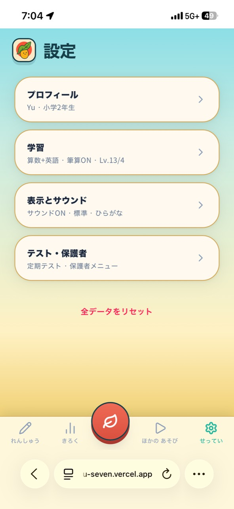
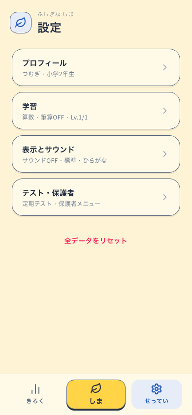
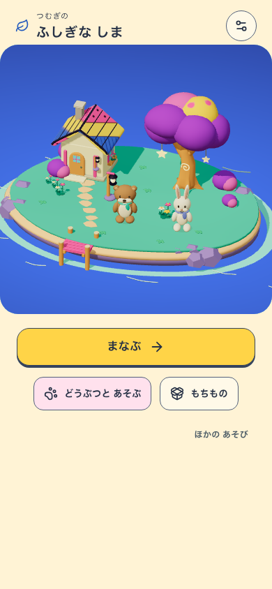
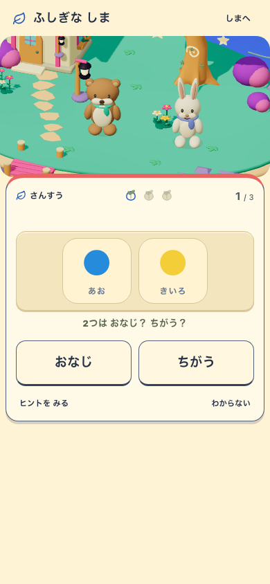
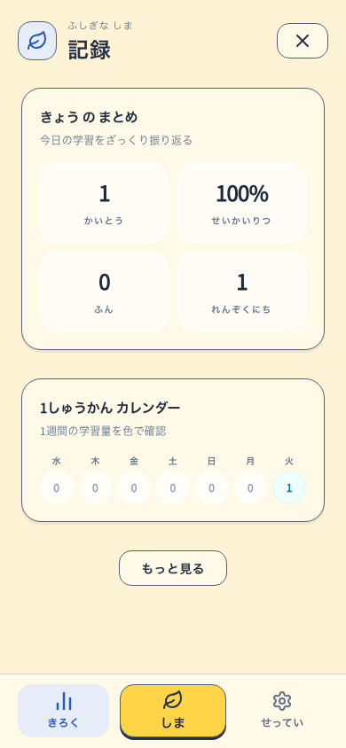

ふしぎな しま · 2026-09-08 · ローカル検証しまから、学ぶ。しまへ、もどる。
共通ナビを「きろく・しま・せってい」に整理。通常のれんしゅうも島の中で始まり、設定・記録には同じ色と葉の印が続きます。
変更前 · 添付いただいた設定画面
変更後 · 実アプリ 390 × 844
変更前はiPhoneのブラウザ枠込み、変更後はChromiumのアプリ領域です。表示プロフィールは検証専用のデータです。
同じ島につながる画面

しま
しまの中で学ぶせってい
きろく途中の問題・記録・受取前のおくりものを保ったまま行き来できます。復習・定期テストは選んだ学習内容を維持。ほかの遊びは島から選べます。
スマホ・タブレットの全22画面 · 検証の範囲と記録
対象: localhost:5296 / revision: island-shell-local-20260908 / VITE_ISLAND_ENABLED=true / shell: mystic-island-shell-v1。公開サイトへの反映・実機iOS・子どもの無説明観察は未実施。